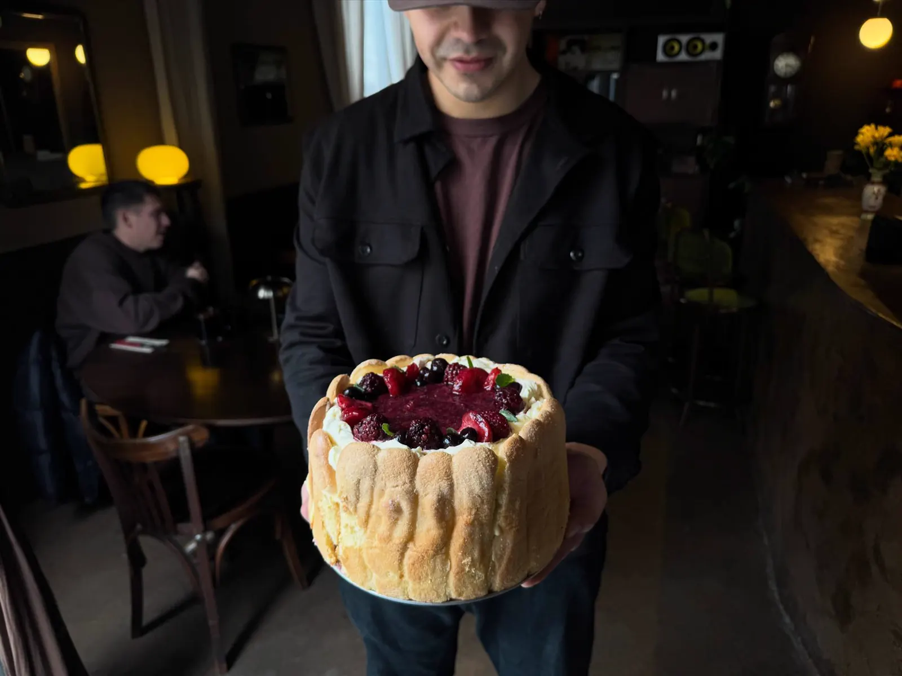
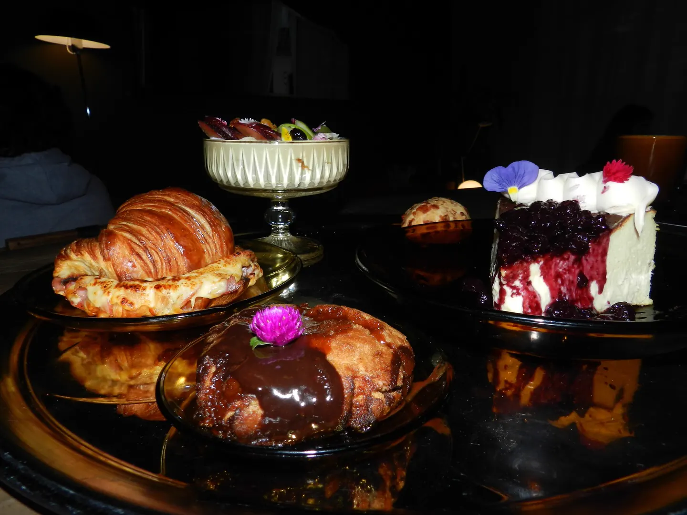

de la terra es un café bistró de almuerzos y pastelería artesanal, con un ambiente cálido y tranquilo, decoración única y buena música. Un escape ideal del ruido de la ciudad, abierto todos los días.
Café con leche y bollería, almuerzos caseros y pastelería artesanal, con ingredientes de excelente calidad.

Menú
Cafetería
Americano$4.100
Café con leche “Latte”$4.600
Cortado$4.100
Flat White$4.500
Capuchino$4.500
Chocolate caliente$5.500
Moca$4.800
Latte toffee$5.000
Filtrado$6.500
Fríos
Americano$4.500
Latte$5.000
Latte toffee$5.500
Latte tonic$6.000
Flat White$5.500
Espresso tonic$6.000
Bebidas sin alcohol
Exprimido de naranja$4.800
Limonada de menta y jengibre$5.000
Limonada de frutos rojos$5.500
Coca-Cola$3.500
Agua con o sin gassin costo
Bebidas con alcohol
Vermouth$6.000
Stella$6.000
Copa de vino$6.000
Fernet$6.000
Salado
Chipá$3.500con jamón y queso · $5.500
Medialuna$4.000con jamón y queso · $7.500
Sanguche de pan casero$12.000manteca, jamón y queso
Tostón de rúcula$9.500queso azul, tomates confitados y nueces
Huevos revueltos$9.500tostada de pan casero con jamón y queso gratinado
Dulce
Torta vasca$12.500
Torta de nuez$12.500dulce de leche y crema
Budín de zanahoria$5.500nueces y frosting de queso
Galleta$4.500consultar opciones
Tostadas$7.500mermelada casera, dulce de leche y manteca, o queso crema
Copón de yogur griego$11.000granola y frutas de estación

Menú del día
Casero, abundante y distinto cada día
Plato principal, bebida y postre por un precio accesible, todo hecho en casa y con ingredientes de excelente calidad. Un almuerzo liviano, en un ambiente tranquilo y con buena música, para bajar el ritmo en medio del día.
El Diario de la Terra
Historias detrás de escena de la vida en el café, platos y dulces del momento, y los días especiales de de la terra. Un rincón acogedor para seguir lo que pasa en nuestra mesa, todos los días.
de la terra abrió sus puertas en Obispo Trejo 305, en Córdoba, con una idea simple: un café bistró de almuerzos y pastelería artesanal, para quien quiere quedarse un rato.